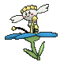

News & Updates
08/29/2025
→
New essay added about bonds. New anime episode review. New screenshots & gifs. Two new things: mega stone madness and postcard maker. Fanlisting updated with first new member. Yay!
-
08/29/2025 →
New essay added about bonds. New anime episode review. New screenshots & gifs. Two new things: mega stone madness and postcard maker. Fanlisting updated with first new member. Yay!
08/11/2025 →
New anime episode review. New gifs added, new screenshots added. New badges added, new banners(scroll down the home page to see!)
08/02/25: → Happy August(ine)! I have added a new page under media for screenshots, and began work on the manga page. Many small bugfixes. Thank you for your patience!
07/29/25: → I've completed the layout I've been wanting to finish . Several new pages have been added, including friends, blood, and beta concepts. Much more to do!
07/24/25: → Two new essays have been uploaded: HM02 and Mega Evolution. Mobile version of the site has been launched for mobile users or users who just don't want to deal with the JS and widgets. Added a new link to links: Prince Lear webshrine! Created new webring specifically for Pokehusbandos.
07/23/25: → HHi everyone! I have updated the Legends ZA page with new Sycamore-related news. I am keeping speculation on my end low for now in case you just wanted the facts! I have also included full size resolutions of the new Legends ZA key arts. Additionally, blog has been fixed!
07/18/25: → Hello, all! You may have noticed the blog is down. Blog functionality will be restored soon. More importantly, the PKMN DIRECT is on the 22nd of this month. I will update the site accordingly with any Sycamore-related news!
07/09/25: → New concept art added to the concept art page. New PMEX page added with Masters EX assets that pertain to Professor Sycamore. Changed navigation bar to be dropdown menus instead of a batch of links. Still trying to fix mobile resolutions... sorry, all!
07/08/25: → New category has been added, 'name', exploring the meaning behind Sycamore's name!
07/07/25: → I am still working on fixing layout/resolution issues. Thank you for your patience! On a sidenote, I have made a small blog page. Going forward, all you need to do is click the →, and be taken to the longer version of site updates.
07/06/25: I have hopefully corrected an issue in which pages have been loading incorrectly. Thank you for your patience!
07/05/25: Happy July, everyone! Two new anime episode reviews have been added. I've changed the rating system a bit... now each episode will have an overall score, and a Sycamore appearance score!
06/30/25: Hello, summer! I have made a Professor Sycamore fanlisting. Please check it out if you have the chance!
06/28/25: I've added a new astrology page talking about speculative astrological associatons to Professor Sycamore!
06/24/25: Hello everyone! Thank you for your patience. The new version of the site is officially live, so I hope you enjoy it! I am still figuring out the music player... however, for now, I'd like to focus on other aspects.
06/03/25: Happy June and Happy Summer, all! A new episode review has been added to anime! c:
05/28/25: Minor information added to Legends ZA page, including Legends ZA release date and full resolution of box art. No new Sycamore news, sorry!
05/23/25: New adoptables added. Userbadges added. Fixed music player. Added 3 new fits to fitcheck. New 'letter 2 prof response!
05/22/25: New game added! It is a visul novel. Please check it out under 'interactive fiction!'
05/20/25: Music player restored again and more layout changes! Thank you for your patience.
05/19/25: New "letters 2 Sycamore" letter posted! New graphics in pixels added. New 50x50 icons added. Layout edited a little!
05/17/25: "PKMN" section returned(forgot it), added 'journey' page. Reorganized sections. Have a good weekend!
05/16/25: Hello, happy weekend, everyone! I have rewritten the 'appearance' section to be more accurate and add more information. In addition, I have added a new page(WIP), called 'fits'. Please check them out!
05/10/25: The anime section has been updated with a new episode review. Happy saturday, all!
05/08/25: Hello everyone. I have added new links to the link page. Please check them out!
I have added a new song to the 'music' category, it's Sycamore's theme from PMEX! Yay!
05/03/25: I have reorganized the games category and added in new pages, including 'office'. Please enjoy!
05/02/25: Hello everyone. I have added back most of the old sections and some new ones, including a topics section. I wasn't originally going to cover external media outside of XY, but I figured why not? Please look forward to it.
05/01/25: Helllo everyone, happy may! You might notice a lot of changes and missing content. I'm bringing it back... I wanted to rewrite most of it. The chattable has been incorporated.
04/29/25: New page! 'Letters to Augustine'. You may anonymously send letters to the Professor. Please be respectful! Additionally, I have brought back the music player and added a calender as well as lumiose time and weather! I have also added coffee cup cursor and fixed some minor things. The theme switcher is now in the upper corner. Yay! ☕
04/28/25: I've been having a little trouble with coding some of these complicated things, and the site has been breaking in places and has issues. I've been doing my best to fix them! Thank you for the patience.
04/27/25: I am very happy to say that I've retooled the site for a more comfortable user experience. In addition to updates such as TCG page and quote page, I have also added themes, replacing the poll earlier. Please enjoy the new Professor Sycamore themes! I will be adding old functionality(such as music player) back soon, soplease be patient, thank you.
04/26/25(part 2): I have added a new page, quotes! It should spit out any quote Professor Sycamore has from the XY games. Yay!
04/26/25: I have added a new page: TCG! Please check it out if you're interested!
04/22/25: I have added 3 new badges to the 'badges' page and a last.fm scrobbler. Thank you!
04/19/25(part2): In addition to winamp skins, I have also added a new page for badges, filled out the 'Diantha' section, and corrected some minor bugs, and added a scrobbler tracker! Yay!
04/19/25: Hello everyone, happy Spring! I am very happy to say South Boulevard has over 2,000 visitors, thank you all! That is so amazing. It has been awhile since the last update, but I have added a new section: winamp skins! I have included a few skins already that I've made. Please check it out!
10/31/24: Happy Halloween! Small update today: added Trevor section to friends, more concept art, and some links under links.
10/30/24: Hello everybody! I have added a new section for concept art of Sycamore and/or related areas. I'm sorry that the site is very rough. I know I have much to work on. Thank you for your patience!
10/28/24: Hi everyone! I added some new sections. We have a link page, a adopt-a-sycamore page, and also the tierno section under friends. I also fixed some of the windows so they are scrollable, i hope!
10/28/24: Hello everybody! I have added three new sections: pokémon, merchandise, and games! I also have added new links, so plese check them out.
10/28/24: Hi everyone! I added some new sections. We have a link page, a adopt-a-sycamore page, and also the tierno section under friends. I also fixed some of the windows so they are scrollable, i hope!
10/25/24: Hello everyone! I made a new WIP section, 'friends', where I hope to talk about Sycamore's friendships with various characters in XY. So far, only the Grace section is written. I also added chespin, some more pixel images, and tried to fix the layout a bit. Thank you for your patience! PS: some things might not work on neocities. I think it's a javascript thing
10/24/24: I've added a new music section! I think I did it right. I hope to add more soon, please look forward to it! There are many sections I hope to add and fine-tune.
10/24/24: Added new media/pixels/gif page! Added music! Changed the home page to more efficient coding I hope...Thank you for the guestbook comments! I love to read them!
10/23/24: Added a new poll, and a media page with some icons i made. I also added a mood thing! I'm learning a lot...
10/22/24: Added chatbox to homepage!
10/22/24: Added dropdown menu with new sections. Yay!
10/22/24: added coffee section!